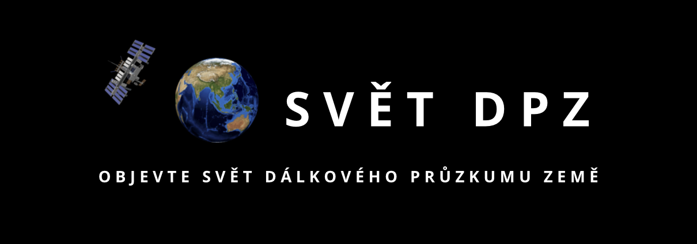
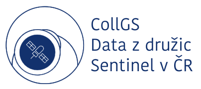

CollGS je technická a provozní platforma, která umožňuje přístup k datům z družic Sentinel v České republice.
V ČR je provozován organizací CESNET, která zajišťuje zrcadlové úložiště družicových dat Sentinel.
Google Earth Engine je cloudová platforma pro vědecké analýzy a vizualizaci geoprostorových dat.
GEE poskytuje API, nástroje pro analýzu velkých datasetů a veřejný archiv družicových snímků až 40 let zpětně.